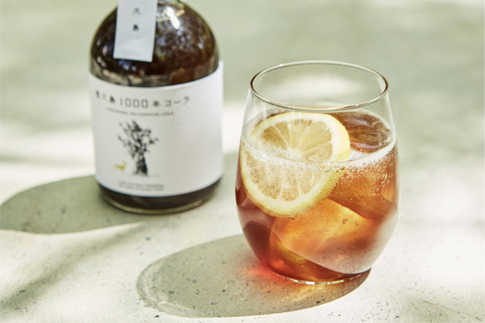
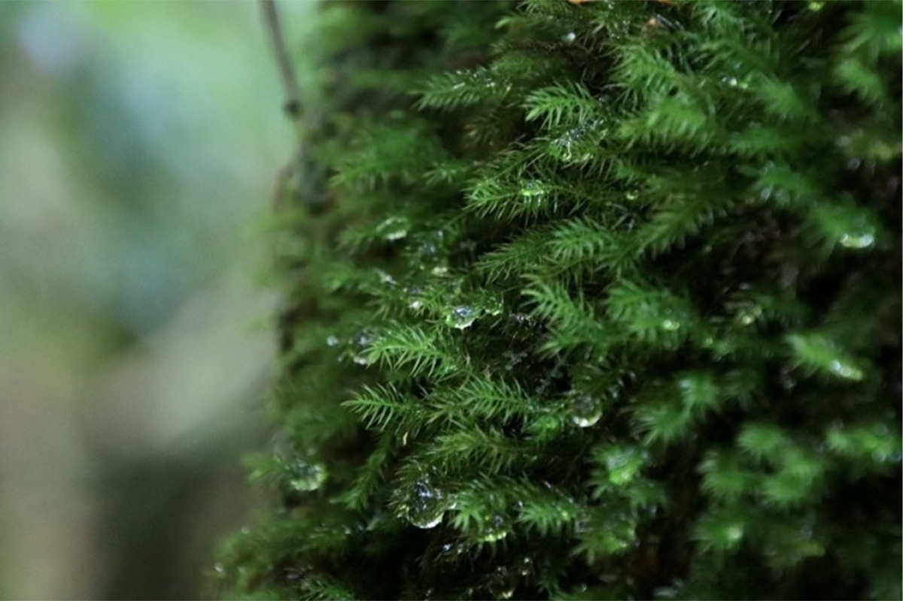
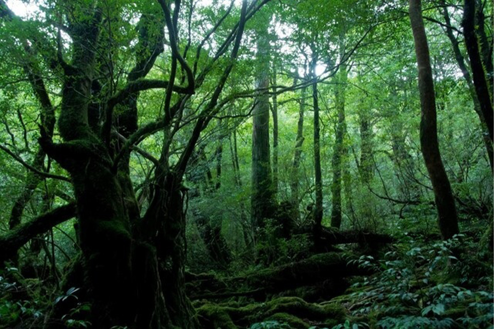
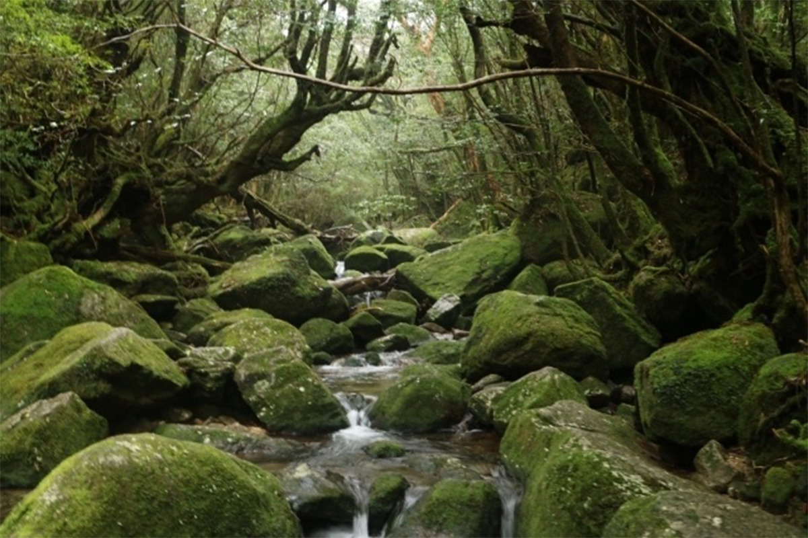
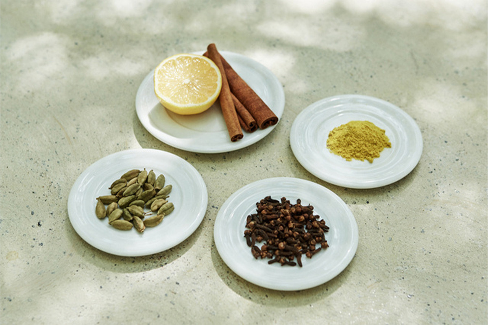
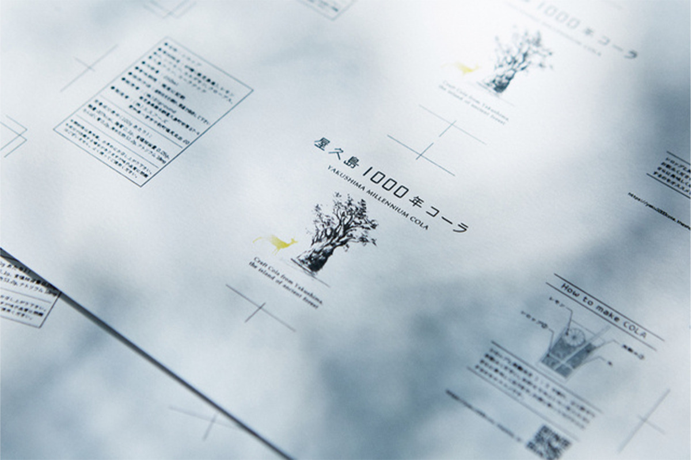
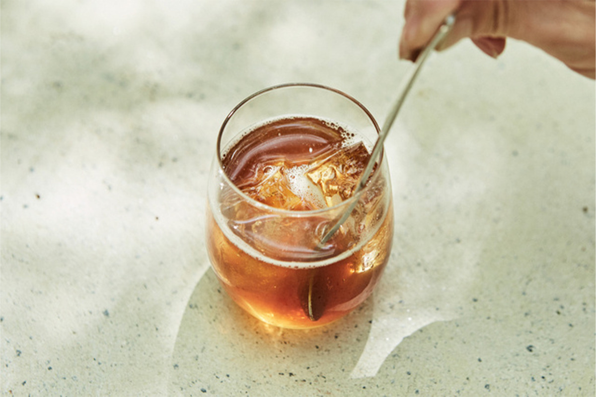
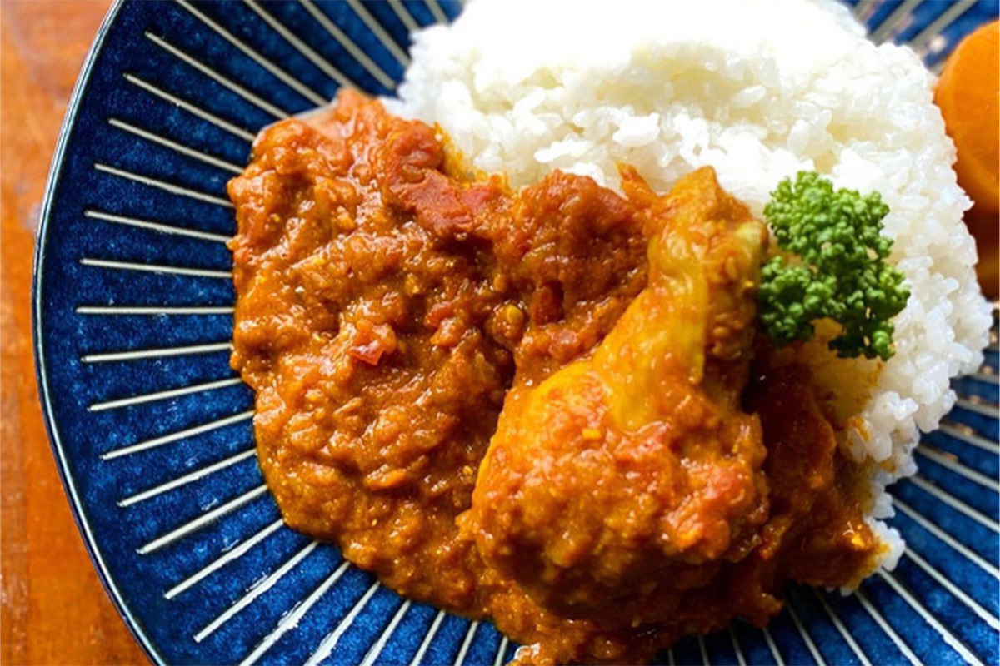
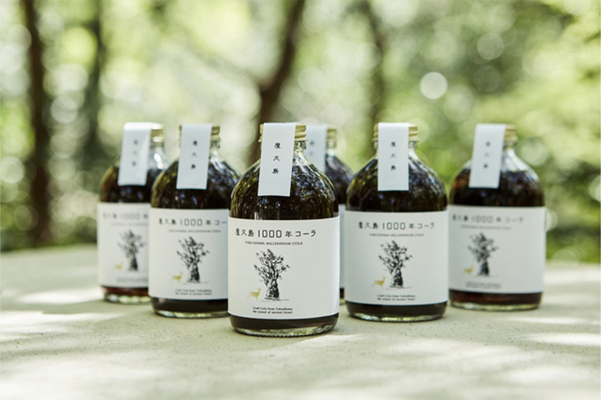
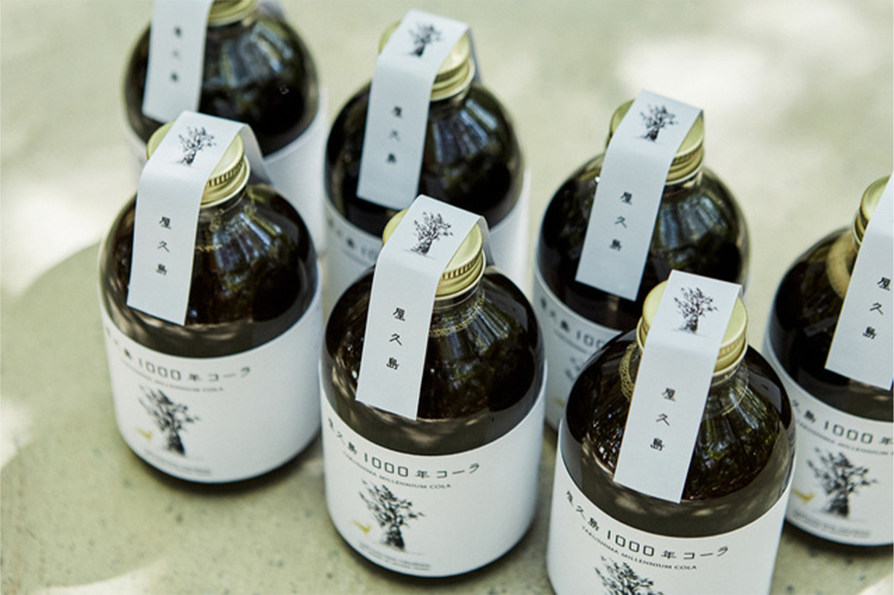

Префектура Кагосима · Якусима · напитки
Yakushima Millennium Cola: крафтовая кола с острова, где месяц длится 35 дождливых дней

Остров Якусима знают по древним кедрам и лесам, покрытым мхом. Теперь его можно попробовать на вкус: на острове варят сироп для крафтовой колы на местной воде, куркуме и тростниковом сахаре.
Остров
Якусима: горы посреди океана
Якусима лежит к югу от острова Кюсю и входит в список Всемирного наследия ЮНЕСКО. Почти весь остров занимают горы: вершины высотой от 1000 до 1900 метров стоят одна за другой. Влажный ветер с океана упирается в склоны и проливается дождями, поэтому о Якусиме говорят, что «дождь здесь идёт 35 дней в месяц».

Остров находится почти в субтропиках, но благодаря высоким горам на нём растут и субтропические, и почти таёжные растения. Такого сочетания нет больше нигде в мире.


История
Кола, которую вернули письмом
Сироп выпускает Biground, компания с Якусимы. Она продаёт через интернет продукты, сделанные из того, что даёт остров, и подбирает их как небольшой магазин местных товаров: только то, что можно сделать именно здесь.
Первую крафтовую колу компания сварила на пробу в 2020 году, но из-за нескольких обстоятельств производство остановили. Остатки партии понемногу расходились, и однажды от покупательницы пришло письмо.
«Говорит, что добавила сироп в чай, и это её согрело. Аппетита сейчас нет, и напиток, который пьётся с удовольствием, для нас большая помощь. Хотим покупать его и дальше»
из письма покупателя
Вернуть колу просили и те, кто пил её раньше. В компании заново пересмотрели состав и идею и сделали напиток, в котором острова стало ещё больше. В 2021 году он поступил в продажу под названием Yakushima Millennium Cola.
Состав
Вода, куркума и тростниковый сахар
Основа сиропа это очень мягкая вода Якусимы: дождь, который долго фильтруется через горную породу острова. Такая вода мягкая на вкус и хорошо сочетается с напитками. К ней добавляют куркуму, которая растёт на Якусиме сама по себе: в ней много эфирных масел и минералов. Сладость дают тростниковый сахар и неочищенный сахар с соседнего острова Танэгасима. Ингредиенты стараются брать с Якусимы или из префектуры Кагосима, чтобы во вкусе был слышен этот край.

Специи смешивают так, чтобы получился «знакомый с детства вкус острова». Кроме куркумы в сироп идут корица, кардамон, гвоздика, лимонный сок и орех колы.
«1000 лет» в названии говорит о времени Якусимы, где деревья живут тысячелетиями, и о надежде, что напиток будут любить долго. Тем, кто ещё не был на острове, создатели хотят дать почувствовать его природу через колу, а тем, кто был, напомнить о его пейзажах. Для уроженцев Якусимы и Кагосимы это напиток, сделанный их родной землёй.

«Мы будем рады, если наша кола станет поводом рассказать кому-то: вот какая природа есть на Якусиме, вот какая есть в Кагосиме»
в компании Biground
Как пить
Одна часть сиропа, три части газировки
Сироп разводят газированной водой: на одну часть сиропа три части газировки и немного выжатого лимона. От обычной колы этот напиток отличается пряной остротой и глубоким вкусом тёмного сахара. Сироп можно добавить в алкогольные напитки или в чай, а несколько капель на мороженое тоже подойдут.

В сиропе куркума и ароматные специи, поэтому он хорошо работает и на кухне: его добавляют в карри или мясо как тайную приправу.

Для тех, кто хочет сварить колу сам, есть набор: те же специи и сахар, что идут в сироп, и вода с Якусимы. Готовить просто. Специи, сахар и воду (столько же по объёму, сколько сахара) кладут в кастрюлю и ставят на огонь. Когда закипит, огонь выключают и добавляют лимон (его покупают отдельно). Смесь ещё раз доводят до кипения и оставляют остывать на ночь.


В 2021 году бутылка сиропа объёмом 250 мл стоила 2740 иен с налогом, вместе с доставкой. Хранить её нужно вдали от прямого солнца при комнатной температуре, а после открытия в холодильнике.
Yakushima Millennium Cola
- Цены / Вход
- 2740 иен с налогом, 250 мл, доставка включена